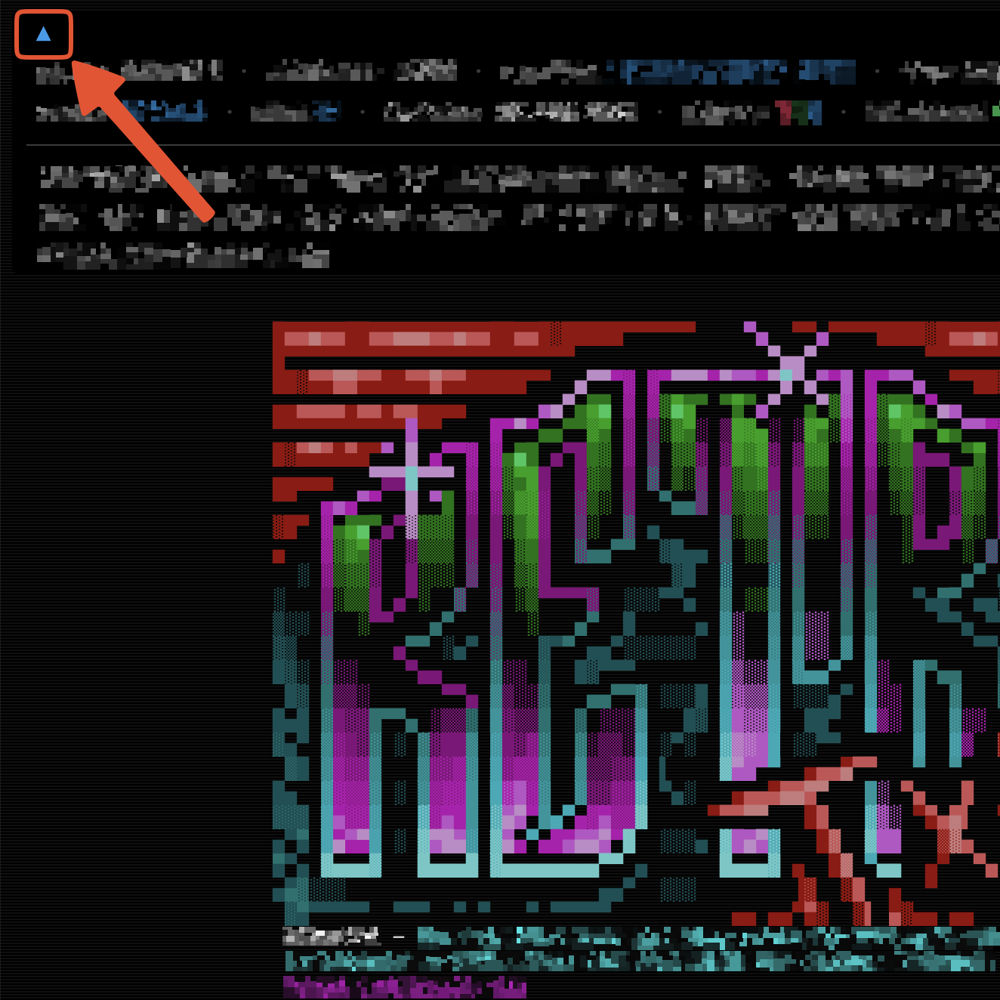

First-time usage
Read and change all data
Despite this access, RetroTxt always ignores websites other than those you tell it to monitor in the background. It also ignores all markup text, such as HTML or XML, for your privacy and overall browser performance.
If unrestricted access remains a worry, you can configure the browser to restrict RetroTxt further.
Add extension
When you install Chrome web store or Microsoft Edge add-ons, your browser will prompt for permission to read and change all data on all websites. Unfortunately, there is no workaround to avoid this. For more information, see Read and change all data to the right.

New install
What is .ANS
The .ANS filename extension signifies text files embedded with ANSI escape control characters for terminals to permit the layout and colorization of the text.
Once installed, you can test the functionality by viewing the RetroTxt ANSI logo hosted at:
Hide the header
You can click the blue arrow on the upper-left corner to hide the header and remove the clutter.

Original text
To view the original ANSI document, focus the tab and launch a view source tab by pressing:
Ctrl u or Cmd Option u
Monitor a new website
This example shows how to add a new website to the collection that RetroTxt monitors in the background. In this case, we will use the Internet Assigned Numbers Authority website at iana.org, which hosts many documents in plain text.
-
In a tab, open the text document special-use-domain-names.txt.
-
Despite being plain text, RetroTxt ignores the page as it is not monitoring iana.org.
- Click the RetroTxt toolbar button and a popup will display the websites it monitors in the background. You can learn more about or remove these websites.
- In the popup, click the blue To include a new website button.
- Under Feature
>Autorun for websites>Paste a URL or hostname input, copy and add the website URL:
Reload a tab
To reload or refresh a tab,
tap F5 or Cmd r
- Switch back to the tab with the
special-use-domain-names.txtdocument and reload. RetroTxt will now format the text!
Change the font
- Click the RetroTxt fonts options button (the TT icon) in RetroTxt toolbar popup.
- Choose IBM Plex Mono Regular from the Suggested fonts.
- Switch back to the tab with the
special-use-domain-names.txttext, and the font will update.
Swap colors
- Click the RetroTxt display options button (the monitor icon) in RetroTxt toolbar popup.
- Under Text color
>Foreground and background pair, choose the white on light selection.
ANSI text
A black background works best with ANSI text.
Switch to the tab with the special-use-domain-names.txt text, and the page colors will reflect the change. Feel free to revert to the MS-DOS color pair or choose another.
Remove a website monitor
Finally, to remove the monitoring of www.iana.org.
- Click the RetroTxt settings button (the cog icon) in RetroTxt toolbar popup.
-
Under Feature
>Autorun for websites -
Click the X button (remove) besides the www.iana.org entry.
- Switch back to the
special-use-domain-names.txtdocument tab and reload. It should revert to the original, unformatted text.